Music Collection
An evolving repository of albums, bands, and ideas that shape my musical journey. Expand each genre to explore a short description, placeholders for album covers, and any notes or references.
Timeline of Key Music Movements
(*This is an optional placeholder section. You could illustrate the evolution of various genres over the decades. Example below.*)
- 1970s: Rise of Punk, Hard Rock, and early Metal.
- 1980s: Emergence of Indie, Shoegaze, and new wave forms of Folk.
- 1990s: Explosion of Math Rock, Post Rock, and experimental subgenres.
- 2000s: Doom, Stoner, and new waves of Dream Pop, Slowcore.
- 2010s+: Further blends: Esoteric Synthpop, crossovers in Christian, Opera, etc.
Genres & Notable Albums
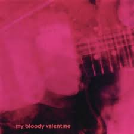
Shoegaze
- Loveless by My Bloody Valentine
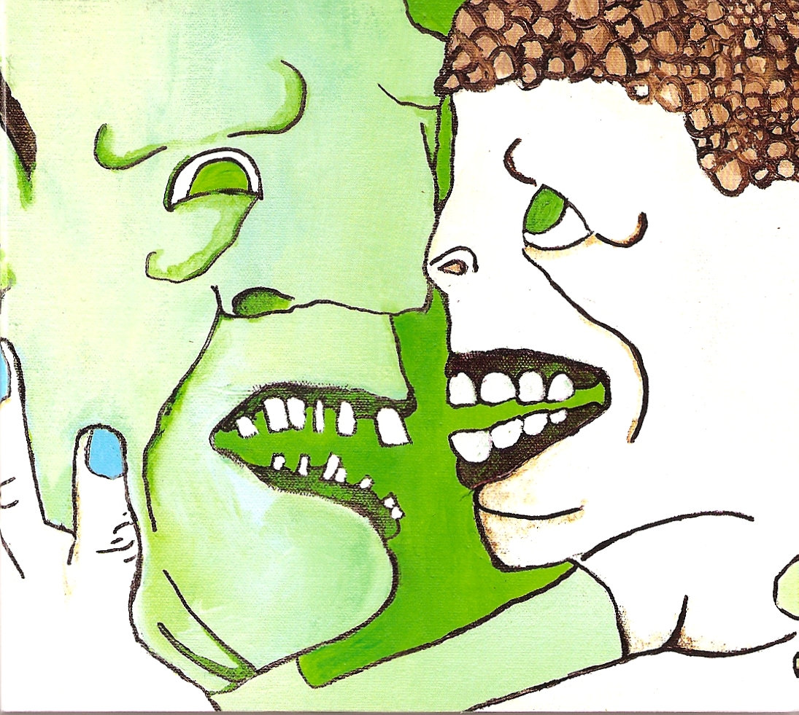
Math Rock
- Drugs To The Dear Youth by Tera Melos
Hard Rock
- Siamese Twins by Smashing Pumpkins
Noise Rock
- Am by Ovlov
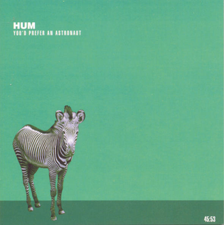
Rock
- You’d Prefer An Astronaut by Hum
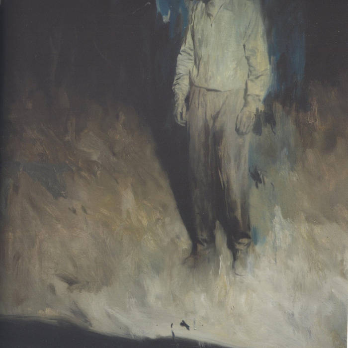
Post Rock
- Love Is a Mirage by oh, raven girl
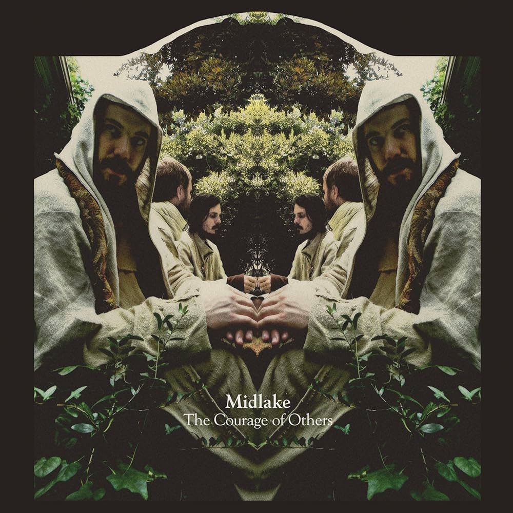
Folk
- The Courage of Others by Midlake
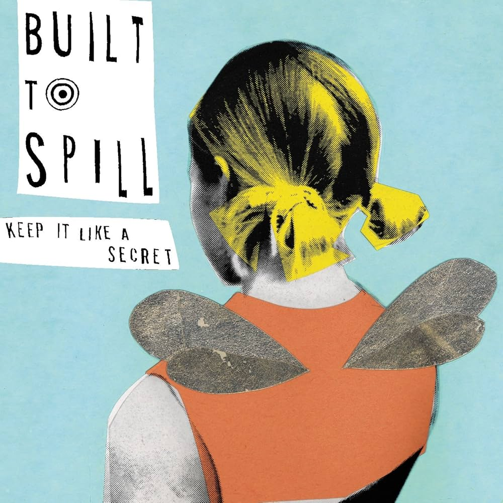
Indie
- Keep It Like a Secret by Built to Spill
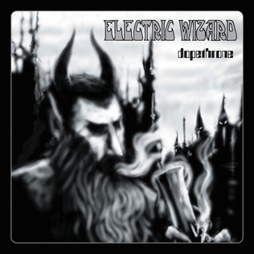
Stoner Metal
- Dopethrone by Electric Wizard
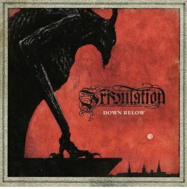
Folk Metal
- Down Below by Tribulation
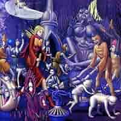
Doom Metal
- Forest of Equilibrium by Cathedral
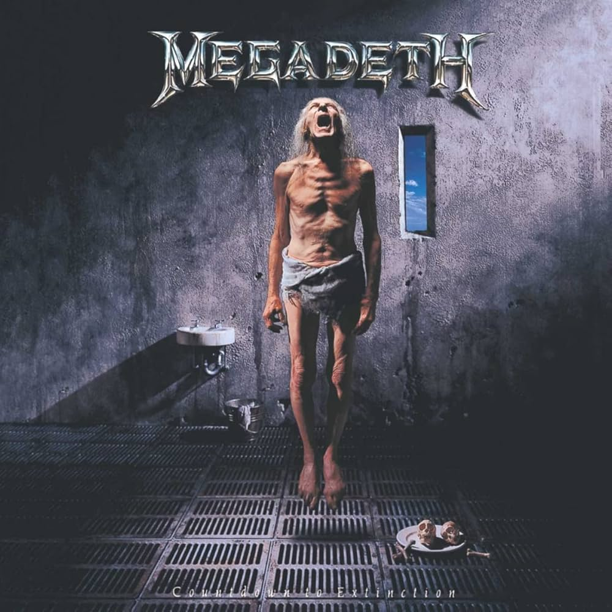
Metal
- Countdown to Extinction by Megadeth
Esoteric Synthpop
- Time by Mr. Kitty
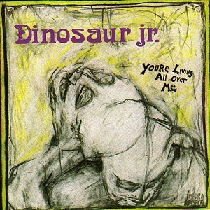
Alt
- You’re Living All Over Me by Dinosaur Jr.
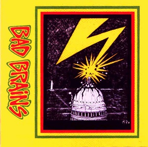
Punk
- Bad Brains by Bad Brains
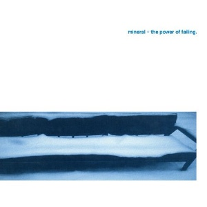
Midwest Emo
- The Power of Failing by Mineral
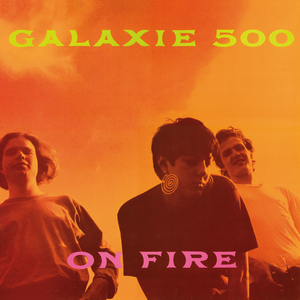
Dream Pop
- On Fire by Galaxie 500
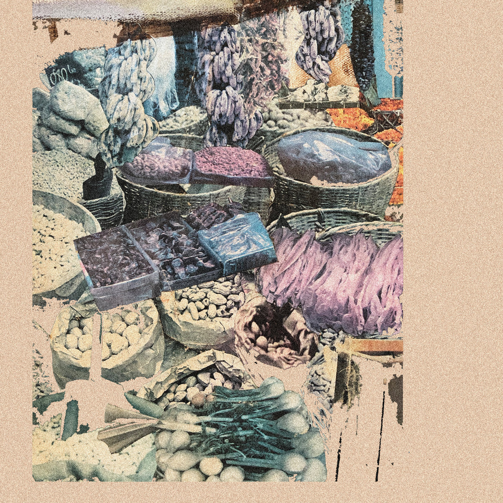
Slowcore
- Sun Into Flies by Joyer
Some of My Favorite Albums
- Sprawl by Bedlocked
- DC Snuff Film / Waste Yrself by Teen Suicide
- You’d Prefer an Astronaut by Hum
- Floral Green by Title Fight
- Am by Ovlov
- Loveless by My Bloody Valentine
- Rohnert Park by Ceremony
- L.A.R.C. by Mexican Slum Rats
- Sungazing by Video Days
- Colourmeinkindness by Basement